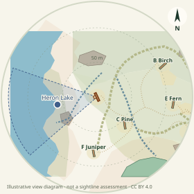

Permanent home · Cabin A concept
Cabin A · Cedar
A cedar-screened bench above the lake, with the porch turned to the water and the entry tucked behind.
Share this home: homes/a/ · orientation · main view · siting

- Use
- Permanent home
- Approximate size
- ~27 m² clear floor area · ~36 m² footprint
- Principal facade
- south · ~245°
- Placed
- 125 m east, 95 m south of the fictional map origin
- Shoreline
- ~53 m
- Wetland
- ~99 m
Orientation #
The long side and screened porch turn south-west across the slope to the lake, while the entry and path stay on the north-east side.
Main view #
Heron Lake seen through cedar and pine, with the far shore low on the horizon. Bearing ~259°, ~58 m to Heron Lake. partly wooded, with openings that reveal the water or sky.
Through shoreline cedar, white pine and a few birch.
Nearby homes #
Cabin B is about 90 m east along the ridge and is screened by pine; Cabin C is about 60 m south-east and largely hidden by the slope. In the view cone: No other building inside the principal view cone..
Path and entry #
The walking path arrives from the east at the north entry. No path crosses the south-west porch or its lake view.
Winter #
Cedar and pine keep the lake edge screened in winter. Leaf-off opens a clearer view through the birch, and the low sun reaches the porch.
Siting #
All illustrative checks pass. These are project assumptions, not legal setbacks or a permit.
- 52.8 m from the shoreline (setback 30 m)
- 99 m from the wetland (buffer 30 m)
- Inside the parcel
- 39.3 m from North ridge outcrop (buffer 8 m)
- 11.1 m from a drainage channel (buffer 10 m)
- Natural ground slope 19.6% (limit 22%)
- Building bench cut/fill 0.87 m (limit 1.6 m)
- Crane reach 17.5 m (limit 24 m)
- Ramp foot 14.5 m from an emergency or access lane (limit 50 m)
- Entry 3.5 m from a walking path (limit 18 m)
- Ramp foot 10.9 m from a walking path (limit 18 m)
Design note #
Cabin A's one-module plan is the starting point. A site-specific variant would widen the sleeping room to fit a 1.5 m turning circle and choose the porch screen colour with the resident.
Drawings and next steps #
Cabin A concept drawings · Look inside Cabin A · Show Cabin A on the hamlet map · Design Lab
This page is a brief, not a construction drawing. No photograph, stock image or proprietary design is reproduced.